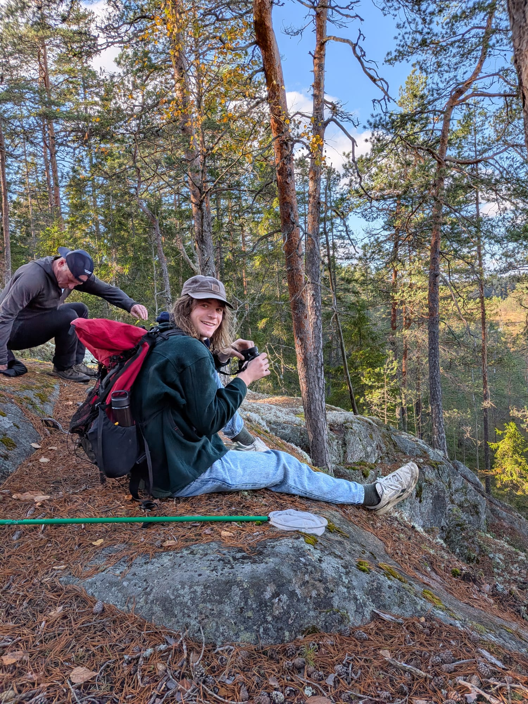

Welcome to my site

Hi! I'm a Master's student in Ecology and Evolutionary Biology at University of Helsinki from Canada.
I'm especially interested in geospatial analysis, species distribution mapping, Bayesian inference. My master's thesis topic is about mapping aquatic macrophytes in small northern lakes.
I used to be a geospatial analyst for the BC Ministry of Water, Land and Resource Stewardship where I worked on land use planning projects.
I also enjoy making data visualization projects. See the Projects tab for more of these.
Contact
Feel free to reach out at northharperross [at] gmail.com